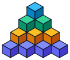

تحلیل هندسی و فضایی روش اقدس
حل مسئلههای ۱۲ و ۱۳ کتاب ریاضی تکمیلی پایه هفتم (سمپاد)
محاسبه مجموع اعداد هرمی با انطباق ۴ کپی در فضا و تعمیم آن به سیمپلکسهای بعد چهارم
سازه پلهای سهبعدی و کشف فرمول مکعبهای اقدس
تحلیل گامبهگام هرم گوشهای مکعبها (۱، ۲، ۳ و ۴ پلهای)، تفکیک عمودی طبقات مثلثی و پیوند مستقیم به مسئله ۱۲
سادهترین سازه پلهای است که تنها از ۱ مکعب واحد در بالاترین طبقه تشکیل شده است:
| شاخص سازه | مقدار عددی | تحلیل هندسی و ساختاری |
|---|---|---|
| تعداد طبقات فعال | ۱ طبقه | تنها شامل بالاترین لایه (قله هرم) |
| تعداد مکعبهای لایه ۱ | T₁ = ۱ | اولین عدد مثلثی |
| مجموع کل مکعبها | S₁ = ۱ | نخستین جمله الگوی مسئله ۱۲ کتاب تکمیلی |
با قرار گرفتن یک لایه مثلثی از ۳ مکعب ($T_2 = 3$) در زیر تکمکعب قله ساخته میشود:
| شاخص سازه | مقدار عددی | تحلیل هندسی و ساختاری |
|---|---|---|
| طبقه اول (بالا) | T₁ = ۱ مکعب | قله هرم روی طبقه زیرین تکیه دارد |
| طبقه دوم (پایین) | T₂ = ۳ مکعب | آرایش مثلثی شامل ۳ مکعب در کف |
| مجموع کل مکعبها | S₂ = ۴ مکعب | دومین جمله در الگوی مسئله ۱۲ کتاب تکمیلی |
دقیقاً همان شکل روی تخته در تصویر! با افزودن طبقه سوم شامل ۶ مکعب ($T_3 = 6$) به زیر لایههای قبلی:
| طبقات هرم ۳-پلهای | تعداد مکعب | فرمول طبقه (اعداد مثلثی) |
|---|---|---|
| طبقه ۱ (قله) | ۱ مکعب | T₁ = (1 × 2) / 2 = 1 |
| طبقه ۲ (میانی) | ۳ مکعب | T₂ = (2 × 3) / 2 = 3 |
| طبقه ۳ (پایه و کف) | ۶ مکعب | T₃ = (3 × 4) / 2 = 6 |
| مجموع کل مکعبها | ۱۰ مکعب | کل هرم اقدس در مسئله ۱۲ کتاب تکمیلی! |
با افزودن طبقه چهارم شامل ۱۰ مکعب ($T_4 = 10$) به عنوان پی و شالودهٔ کل سازه:
| شاخص هندسی | مقدار عددی | توضیح مفهومی |
|---|---|---|
| تعداد طبقات | ۴ طبقه | چهار پلهٔ فضایی از رأس تا کف |
| تعداد مکعب لایه آخر (کف) | T₄ = ۱۰ مکعب | بزرگترین لایهٔ مثلثی در کف سازه |
| مجموع کل مکعبها | S₄ = ۲۰ مکعب | چهارمین جمله دنباله الگوی اقدس |
با باز شدن عمودی طبقات در مدل سهبعدی، راز شکلگیری هر پله کاملاً عیان میشود: هر طبقه خودش یک عدد مثلثی است!
| رنگ طبقه در مدل ۳D | تعداد مکعب | آرایش هندسی لایه | فرمول هر پله (روی تخته) |
|---|---|---|---|
| آبی آسمانی (طبقه ۱) | ۱ مکعب | تکمکعب قله | 1(2)/2 = 1 |
| سبز زمردی (طبقه ۲) | ۳ مکعب | مثلث گوشهای ۲×۲ | 2(3)/2 = 3 |
| کهربایی (طبقه ۳) | ۶ مکعب | مثلث گوشهای ۳×۳ | 3(4)/2 = 6 |
| نیلی (طبقه ۴) | ۱۰ مکعب | مثلث گوشهای ۴×۴ | 4(5)/2 = 10 |
تعداد کل مکعبهای سازه $n$-پلهای حاصل جمع اعداد مثلثی است و از فرمول تتراهدرال (اعداد هرمی) به دست میآید:
| تعداد پله ($n$) | جمع مکعبهای طبقات | مجموع کل مکعبها ($S_n$) | نقش در مسئله ۱۲ کتاب تکمیلی |
|---|---|---|---|
| n = ۱ | ۱ | S₁ = ۱ | جمله اول دنباله اقدس |
| n = ۲ | ۱ + ۳ | S₂ = ۴ | جمله دوم دنباله اقدس |
| n = ۳ | ۱ + ۳ + ۶ | S₃ = ۱۰ | جمله سوم دنباله اقدس (هرم ۳ طبقهای) |
| n = ۴ | ۱ + ۳ + ۶ + ۱۰ | S₄ = ۲۰ | جمله چهارم دنباله اقدس |
| n = ۵ | ۲۰ + ۱۵ | S₅ = ۳۵ | جمله پنجم دنباله اقدس |
| n = ۶ | ۳۵ + ۲۱ | S₆ = ۵۶ | جمله ششم دنباله اقدس |
مسئله ۱۲: محاسبه مجموع ۴۱ جمله از الگوی هرمی
تحلیل الگوی اعداد چهاروجهی (تترائدرال) و محاسبه مجموع با استفاده از تقارن هندسی هرمها.
اقدس میخواست چهل و یک عدد موجود در الگوی عددی زیر را با هم جمع بزند:
او با روشی هندسی ابتدا حاصل را به دست آورد تا در ادامه، مجموع کل این ۴۱ عدد را محاسبه کند.
ب) با استفاده از روش اقدس، حاصل جمع این ۴۱ عدد چقدر میشود؟
هر یک از این جملات، تعداد کل مکعبهای واحد تشکیلدهنده یک هرم با قاعده مثلثی است:

تحلیل ابعاد هندسی و تعداد کپیهای متقارن
بررسی ساختار هندسی در ابعاد ۱ و ۲ و دلیل ریاضی نیاز به ۴ کپی در بعد ۳ بر پایه رئوس چندوجهیها.
تجزیه حاصل عبارت ۱۰ + ۴ + ۱ در فضا
لایهبندی عبارات جبری و ساخت یک هرم مکعبی ۱۰ تایی (ماوس را بکشید تا دوربین بچرخد)
اقدس جملات عبارت را به مؤلفههای پایهای شکست:
انطباق ۴ کپی فضایی و ایجاد حاصلجمع یکسان در همه موقعیتها
بررسی ۴ هرم با چرخشهای متناظر در فضا و مشاهده انطباق هندسی برای رسیدن به ضریب مشترک ۶.
هرم چهاروجهی دارای ۴ رأس است. رأس نوکتیز (۳) در هر کپی روی یکی از ۴ رأس قرار میگیرد:
محاسبه مجموع چهل و یک جمله و فرمول تعمیمیافته
سادهسازی جبری سریع و ماشینحساب زنده کلاسی برای ارزیابی هر n دلخواه
هر مقداری برای وارد کنید تا درجا محاسبه شود:
سیمپلکسها از بُعد ۰ تا ۴ و قضیهٔ تقارن (d+1) کپی
بررسی ساختار هندسی سادهترین چندوجهیها، تجسم استودیویی خانواده سیمپلکسها و چرخش ۴ بعدی
سیمپلکس در هر بُعد ، سادهترین شکل محدب برای احاطه کردن فضا است که دقیقاً با رأس مستقل ساخته میشود:
| بُعد (d) | نام سیمپلکس | تعداد رأس | کپی متقارن | مخرج کسر | فرمول مجموع |
|---|---|---|---|---|---|
| ۰D | نقطه تکین | ۱ | ۱ کپی | ۱! = ۱ | |
| ۱D | پارهخط راست | ۲ | ۲ کپی (نجمه) | ۲! = ۲ | |
| ۲D | مثلث متساویالاضلاع | ۳ | ۳ کپی (نوشین) | ۳! = ۶ | |
| ۳D | چهاروجهی منتظم | ۴ | ۴ کپی (اقدس) | ۴! = ۲۴ | |
| ۴D | پنجخانه (Pentatope) | ۵ | ۵ کپی فضایی | ۵! = ۱۲۰ |
نقطه، ابتداییترین واحد هندسی با ۱ رأس است. مجموع نقطهٔ واحد (دنباله اعداد ۱) طبق الگوی کسرها:
| شاخص ساختاری | مقدار | تفسیر ریاضی |
|---|---|---|
| تعداد رأس | ۰ + ۱ = ۱ | تنها ۱ رأس دارد (در استودیوی سهبعدی با گوی سفید مشخص شده است) |
| تعداد یال و وجه | ۰ | فاقد هرگونه لبه یا سطح |
| موقعیت در مثلث خیام | ستون ۱ | دنباله ثابت تماماً ۱ () |
پارهخطی محدود به ۲ رأس. متناظر با مجموع اعداد طبیعی ۱ تا (روش تقارن مستطیلی نجمه):
| شاخص ساختاری | مقدار | تفسیر ریاضی |
|---|---|---|
| تعداد رئوس | ۱ + ۱ = ۲ رأس | دو نقطه انتهایی پارهخط (قرمز در مدل سهبعدی) |
| تعداد کپی تقارن | ۲ کپی | روش نجمه: دو ردیف ۱ تا به صورت معکوس روی هم قرار میگیرند |
| مخرج کسر | ۲! = ۲ | مساحت مستطیل حاصل بر ۲ تقسیم میشود |
سادهترین چندضلعی صفحه با ۳ رأس. متناظر با مجموع اعداد مثلثی (روش تقارن متوازیالسطوح نوشین):
| شاخص ساختاری | مقدار | تفسیر ریاضی |
|---|---|---|
| تعداد رئوس | ۲ + ۱ = ۳ رأس | سه گوشه متساویالاضلاع (کروی قرمز با لبههای شیشهای) |
| تعداد کپی تقارن | ۳ کپی | روش نوشین: ۳ نسخه از مثلث با دورانهای ۱۲۰ درجه جفت میشوند |
| مخرج کسر | ۳! = ۶ | یک مکعب سهبعدی را میتوان به ۶ چهاروجهی معادل تجزیه کرد |
هرم منتظم با ۴ وجه مثلثی و ۴ رأس. متناظر دقیق با حجم مکعب مستطیل اقدس حاصل از ۴ کپی متقارن:
| شاخص ساختاری | مقدار | تفسیر ریاضی |
|---|---|---|
| تعداد رئوس | ۳ + ۱ = ۴ رأس | چهار گوشه سهبعدی با زوایای فضایی متساوی |
| تعداد کپی تقارن | ۴ کپی (اقدس) | روش حل اقدس: ۴ هرم یکسان طوری کنار هم مینشینند که مکعب را پر کنند |
| مخرج کسر | ۴! = ۲۴ | تعداد جایگشتهای ۴ رأس چهاروجهی برابر ۲۴ است |
سادهترین جسم در فضای ۴ بعدی با ۵ رأس. تعمیم مستقیم روش اقدس با ۵ کپی متقارن در ابرمکعب:
| شاخص ساختاری | مقدار | تفسیر ریاضی |
|---|---|---|
| تعداد رئوس | ۴ + ۱ = ۵ رأس | پنج رأس در فضای چهاربعدی () |
| تعداد کپی تقارن | ۵ کپی فضایی | ۵ نسخه از ۴-سیمپلکس برای پر کردن ابرمکعب ۴ بعدی |
| مخرج کسر | ۵! = ۱۲۰ | فاکتوریل ۵ برای تصحیح شمارشهای مکرر تقارنهای ۴ بعدی |
ارتباط با مثلث خیام-پاسکال و تعمیم به ابعاد بالاتر
بررسی قطرهای مثلث خیام-پاسکال و انطباق آن با اعداد چندپلهای و هرمی در ابعاد مختلف
تعداد کپیها تصادفی نیست؛ بلکه ساختار هندسی سیمپلکسهاست. برای ایجاد تعادل و جمع یکسان در تمام رأسهای یک شیء در بعد ، همواره به کپی نیاز است. به همین دلیل در بعد چهارم نیز به ۵ کپی نیاز خواهد بود.
خیلی ممنون از توجه و همراهی شما
امیدواریم از این ارائه و حل هندسی مسئله لذت برده باشید.